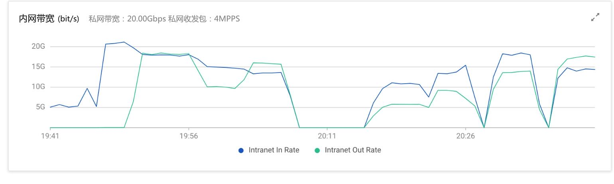
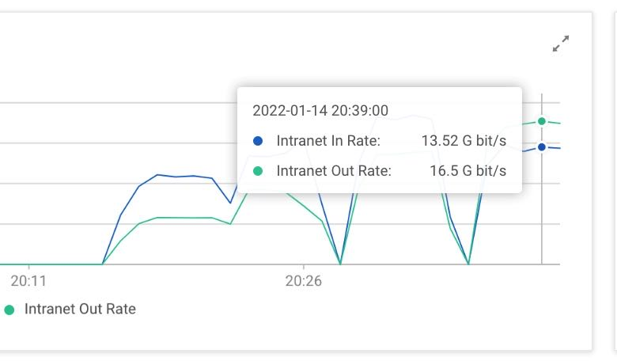
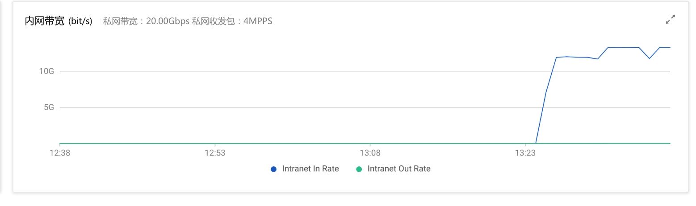
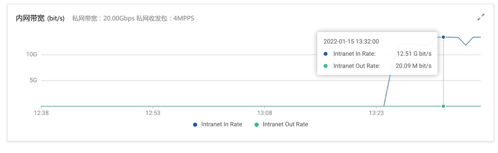
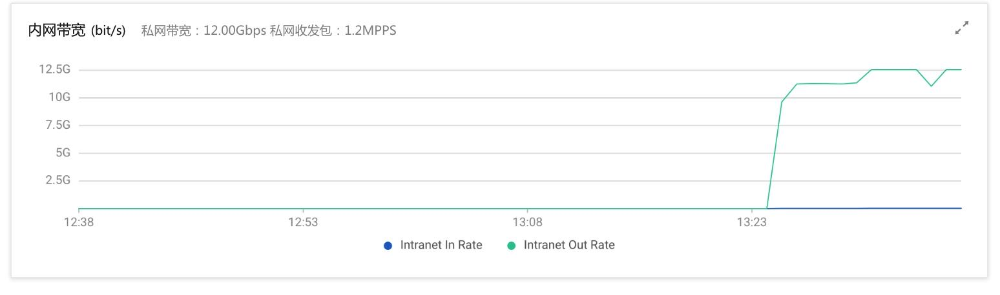
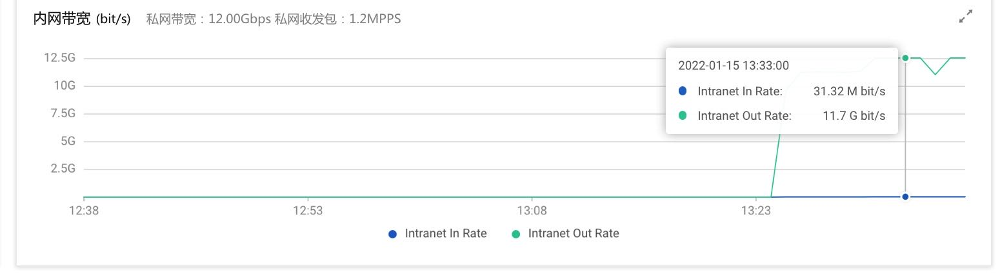

阿里云带宽测试
Table of Contents
一台机器上作为服务器 `iperf -s`, 一台机器作为客户端 `iperf -c 172.26.194.250 -t 300 -d -P 1/2/4/8`
一轮测试5分钟，使用不同的并行度。单并行度可能并不能测试出极限带宽。
单向可以到达宣称的指标（比如20Gbps)，双向下来的话每个方向可以达到70%（in=14Gbps, out=14Gbps), 虽然他们对外都是说in+out是带宽极限。
1. SR x SR(20Gbps)


2. SR x HDFS(20Gbps<->12Gbps)
Input
 
Output
 